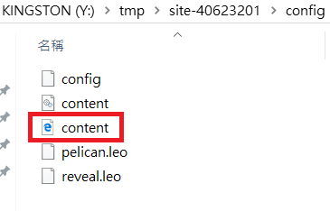

Week6 << Previous Next >> Week8
Week7
課程內容：
使用 CMSimfly 過程碰到無法正確解讀 config/content.htm 時，先更新程式碼或回報問題的流程、說明如何利用 Virtualbox 安裝 Ubuntu 18.04.1 伺服器自行建立 Fossil SCM 。
步驟：
1.升級最新的 CMSimfly 倉儲中的 flaskapp.py或更改content程式碼。

2.Virtualbox 安裝 Ubuntu 18.04.1 伺服器自行建立Fossil SCM 。
Week6 << Previous Next >> Week8